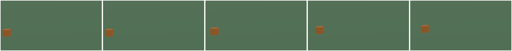
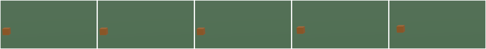

The blind suite's lab fixture rendered by deep-show. The logic item coach steps at 70 Hz and marks a fire of kick at its step 240 (t = 3.4286 s). The world steps at 120 Hz, so the first world step at or after that time is 412. The right column is the same scene under the planted twin fire_one_step_late. Labels sit outside the rendered frames. The floor, goal and colors are drawn for this page only; the world and the camera are the suite's.
| Check | Expected | Logic fires on time | Planted late fire |
|---|---|---|---|
| Launch the bake keeps (world step, source) | 412, logic:coach | 412, logic:coach PASS | 414, logic:coach (late, as planted: 414) |
| First state with the ball moving (after N steps) | 413 | 413 PASS | 415 |
| First exported frame that differs from frame 0 (60 fps; frame f = state after 2f steps) | 207 | 207 PASS | 208 |
| Scene ball (eval, 240 frames) vs the world's ball after step 2f, worst error | 0 m | 0 m PASS | 0 m |
| Frames exported | 240 | 240 PASS | 240 |
| Step hashes, on time vs late | equal through state 412, differ from 413 | equal through state 412, first differ at state 413 PASS | |
The blind acceptance suite asserts the same facts (3/3 pass): the launch at 412 from logic:coach, a deep-physics replay of the kept entries giving the same 481 step hashes, and the planted twin failing its judge, naming step 412.


| World step | Logic fires on time: x (m) | Planted: fire one step late: x (m) |
|---|---|---|
| 404 | 0.0000 | 0.0000 |
| 405 | 0.0000 | 0.0000 |
| 406 | 0.0000 | 0.0000 |
| 407 | 0.0000 | 0.0000 |
| 408 | 0.0000 | 0.0000 |
| 409 | 0.0000 | 0.0000 |
| 410 | 0.0000 | 0.0000 |
| 411 | 0.0000 | 0.0000 |
| 412 | 0.0000 | 0.0000 |
| 413 | 0.0500 | 0.0000 |
| 414 | 0.1000 | 0.0000 |
| 415 | 0.1500 | 0.0500 |
| 416 | 0.2000 | 0.1000 |
| 417 | 0.2500 | 0.1500 |
| 418 | 0.3000 | 0.2000 |
| 419 | 0.3500 | 0.2500 |
| 420 | 0.4000 | 0.3000 |
| 421 | 0.4500 | 0.3500 |
| 422 | 0.5000 | 0.4000 |
| 423 | 0.5500 | 0.4500 |
| 424 | 0.6000 | 0.5000 |
render.test.ts.txt (a vitest file, kept as text so no lane runs it) drives deep-show (full set, this branch at the merge with main) with the blind suite's own helpers: deep_show, physics_bake, world, 240 eval calls and an export to PNG frames, once plain and once with the scenario's planted: "fire_one_step_late". validate.mjs computes every number on this page from those replies and frame bytes. ffmpeg makes the videos and the crops.